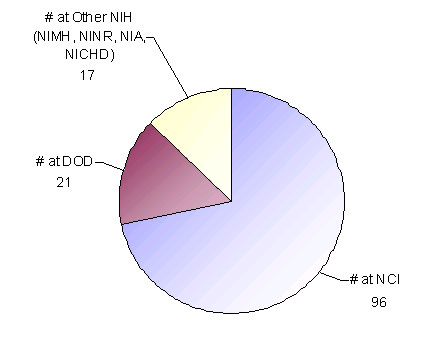
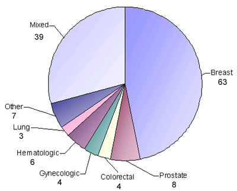
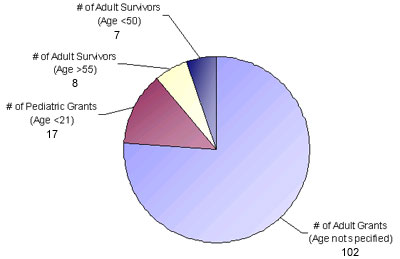

Cancer Control Research: OCS Analysis for FY 2000
Overview of the Fiscal Year (FY) 2000 National Institutes of Health (NIH)/ Department of Defense (DOD) Cancer Survivorship Research Grant Portfolio
- For this portfolio analysis, survivorship research was defined as that which focused on the health and life of a person with a history of cancer beyond the acute diagnosis and treatment phase.
- Studies that examined newly diagnosed survivors or those in active treatment were included in the portfolio analysis if follow-up extended at least two months or longer post-treatment.
- Studies addressing recurrence or end-of-life research were not included in this particular analysis.
Chart 1 shows the distribution of the FY2000 survivorship research grant portfolio by federal government organization: The National Cancer Institute (NCI), Other National Institutes of Health, and the Department of Defense's Congressionally Directed Medical Research Program (http://cdmrp.army.mil/).
Table 2 shows the distribution of FY2000 survivorship research grants by focus and funding levels: physiologic, psychosocial, or health behavior interventions, psychosocial/physiologic sequelae, patterns and quality of care, surveillance, cancer communications, and training and conference grants. *DOD funding is not represented.
Chart 3 shows the distribution of FY 2000 survivorship research grants by cancer site. Approximately 48% of NIH/DOD survivorship research grants have a primary focus on female breast cancer survivors. Of these, over half (N = 35) examine the efficacy of a physiologic, psychosocial or health behavior intervention for breast cancer survivors.
Chart 4 shows the distribution of FY2000 survivorship research grants by age: pediatric survivors, young adult survivors (age <50 years), and older adult survivors (age >50 years). Pediatric survivors are defined as anyone diagnosed before the age of 22. Study participants may range from children to young adults.
Table 5 shows the distribution of FY2000 survivorship research grants that focus on the family members of cancer survivors: spouses, parents, children (both young, and adult), caregivers, and the family unit as a whole.
Chart 1: NIH/DOD- Breakout of FY 2000 Survivorship Research Grants: by Federal Government Organization (N = 134)
 [D]
Table 2: NIH/DOD- Distribution of FY 2000 Survivorship Grants by Grant Focus and Dollars*
| Grant Focus | # of NIH/DOD Grants | FY 2000 $ for NIH |
|---|---|---|
| Physiologic, Psychosocial or Health Behavior Interventions | 62 | $17,940,864 |
| Psychosocial/QOL | 27 | $4,160,383 |
| Physiologic Sequelae | 20 | $4,772,930 |
| Patterns and Quality of Care | 11 | $3,058,476 |
| Surveillance | 6 | $880,232 |
| Training and Conference Grants | 7 | $438,176 |
| Cancer Communications | 1 | $324,555 |
*Department of Defense dollars are not represented
Chart 3: NIH/DOD- Breakout of FY 2000 Survivorship Research Grants by Site (N = 134)
 [D]
Chart 4: NIH/DOD- FY 2000 Breakout of Survivorship Research Grants by Age (N = 134)
 [D]
Table 5: Distribution of FY 2000 NIH/DOD Survivorship Research Grants focused on the Family (N = 24)
| Family Member | Number of Grants |
|---|---|
| Spouse | 7 |
| Parents of children age <21 | 5 |
| Family Member Self-Identified as Caregiver | 5 |
| Offspring <21 | 3 |
| Offspring >21 | 2 |
| Family Unit | 2 |